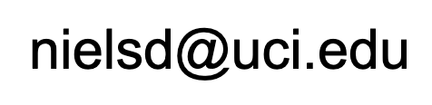

Mondays, Wednesday, & Fridays, 11:00-12:50pm
on Zoom
Zoom class link available (click here) on Canvas
Professor: Niels
Dickson, Department of Language Science
Office hours: 10am Wednesdays at the Zoom
link (click here) on Canvas
Email is the best way to schedule an appointment not during this time.

Welcome to the class webpage!
Note: All assignments, all lecture notes, and most
reference readings can be found by clicking on the
relevant link in the schedule section.
The material for the class that you are responsible for is covered completely in the course lecture notes, available (sometimes with accompanying podcasts) for download through the schedule section and on the class Canvas site in the assignments section under "Lectures" and "Review Sessions". However, reference materials are often helpful for understanding the material in the lecture notes, and will come primarily from videos, websites, and short articles. Accompanying reference material for each lecture can be found on that day's "Reference Material" column in the schedule section.
Language is an incredibly complex system of knowledge. Not only are
there multiple levels of representation - sounds and
words and phrases and whole utterances and meanings - but within a given level, even simple forms can be derived from multiple interacting pieces of knowledge. Yet as speakers of any given language, we are often blissfully unaware of how much we need to know in order to be able to communicate with language.
One of the most striking things about language is that all typically-developing children learn their native language flawlessly, especially when compared to adults trying to accomplish the same task. This is true despite adults' superior cognitive skills. Children of the world seem somehow suited for language acquisition in a way that adult humans - and other animals - are not.
In this class, we survey the broad topic of language acquisition, focusing not only on children's developmental trajectory, but also on what knowledge of language is, how language acquisition relates to cognition in general, and acquisition of language by speakers with sensory or cognitive deficits. Topics include the biological basis of language, levels of linguistic knowledge, language and cognition, and language in special populations.
This course counts as a category III GE course. After completing this course, successful students will be able to do the following:
- Demonstrate knowledge and understanding of the theories, sources, and interpretations of human language acquisition behavior at the individual level.
- Demonstrate an understanding of contemporary and historical perspectives on human language acquisition behavior.
- Understand and explain the scientific/interpretive methods used in (i) the acquisition of knowledge about human language learning behavior and (ii) the testing of competing theories about human language acquisition.
- Critically evaluate methods, findings, and conclusions in the research literature on human language acquisition behavior.